The Diary
별의 약초도감 다이어리
Star Herbarium Diary 2027
고양이 약초사 바바가 열두 달 동안 정원에서 적어 둔 약초 노트를, 당신의 한 해를 기록하는 다이어리로 엮었습니다.
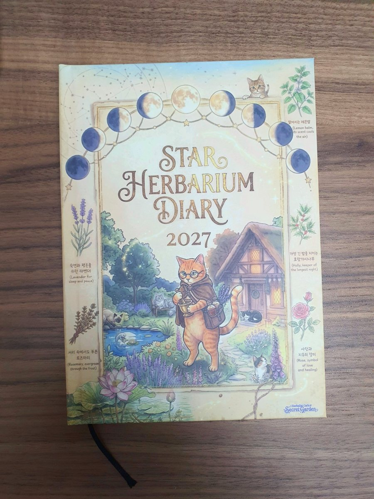
Diary · 2027
별의 약초도감 다이어리 2027
Star Herbarium Diary
달력에는 달이 뜨고, 달마다 한 종의 약초가 피어납니다. 삭과 보름, 상현과 하현을 따라 한 해를 적어 내려가는 A5 하드커버 다이어리예요.
바바의 손글씨 약초 기록 옆에 '나의 기록' 칸을 두었어요. 다이어리이면서, 한 해가 지나면 나만의 약초도감이 되는 책입니다.
A5 하드커버148쪽2027년 날짜형달 위상 달력열두 달의 약초
Features
이런 다이어리예요
01
달력에 달이 떠 있어요
삭 · 상현 · 보름 · 하현, 달 모양이 바뀌는 날을 달력에 표시했어요.
02
달마다 약초가 한 종씩
지배 행성, 채집 위상, 바바의 손글씨 기록과 '나의 기록' 칸이 함께 있어요.
03
두 쪽을 다 쓰는 먼슬리
펼침면 달력에 메모 칸까지 있어 넉넉하게 쓸 수 있어요.
04
한 해를 한눈에
2027 · 2028 미니달력과 열두 달 일정을 한 번에 적는 연간 계획표가 있어요.
05
탁상달력과 한 세트
달마다 표지에 탁상달력과 같은 삽화와 색이 들어가 있어요.
06
넉넉한 노트
도트 노트 72쪽, 줄 노트 13쪽, 한 해의 목표를 적는 '올해의 정원'이 있어요.
Twelve Gardens
열두 달, 열두 개의 정원
달마다 바바의 정원은 다른 얼굴을 하고 있어요.
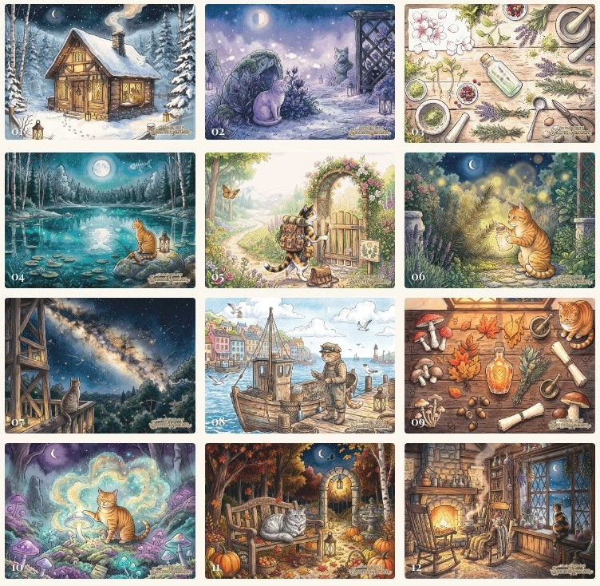
Every Month
달마다 4쪽, 열두 달
월 표지 · 바바의 약초 노트
그달의 정원 일러스트와 달 이름, 이달의 약초 이야기.
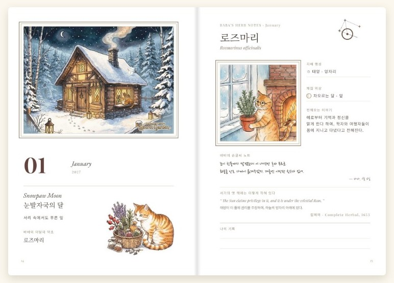
펼침면 먼슬리
날짜 옆 달 위상 아이콘, 공휴일과 천문 현상, MEMO 칸.
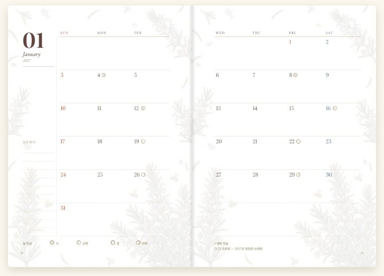
5월 · 장미
달마다 다른 정원과 약초가 이어져요.
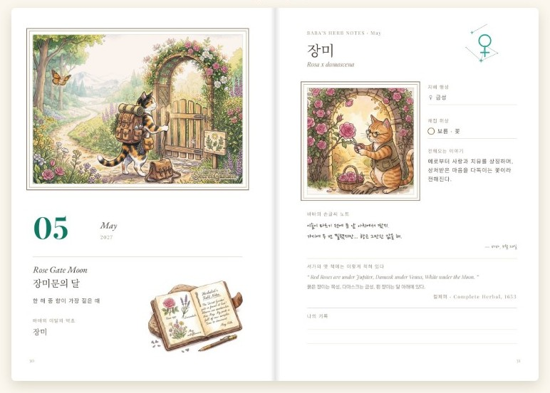
※ 내지 이미지는 인쇄 파일을 화면으로 옮긴 것으로, 실제 내지는 미색 종이예요.
Inside
펼쳐 보면
인쇄된 실물을 직접 촬영한 사진이에요.
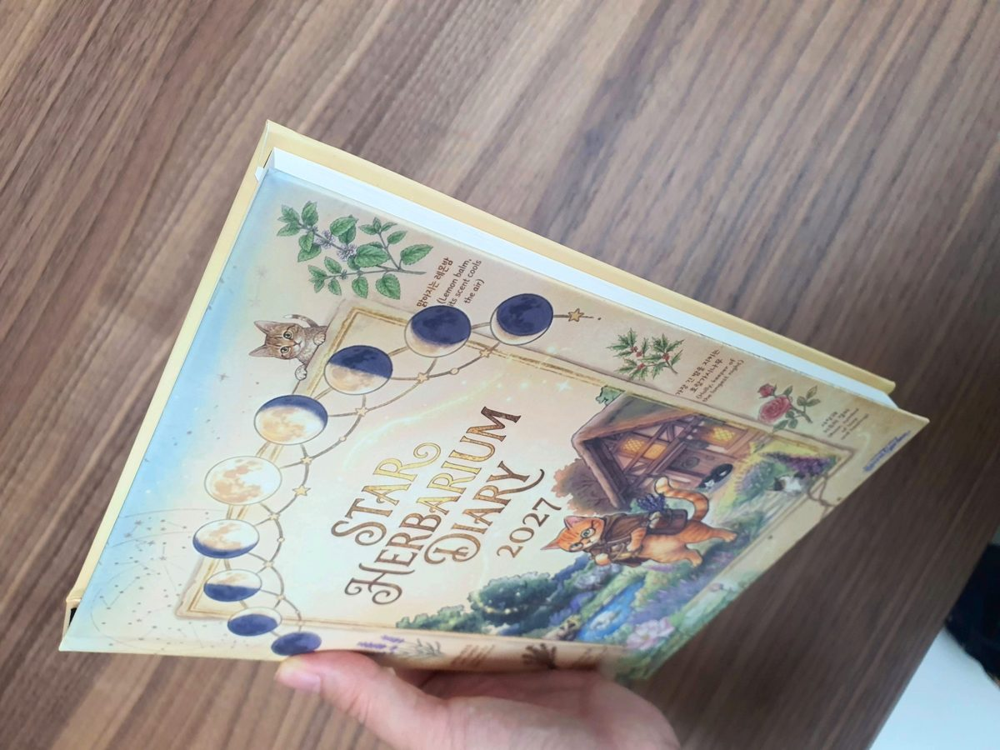
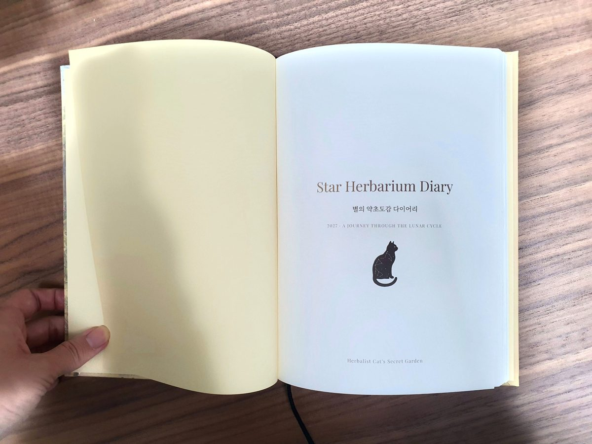
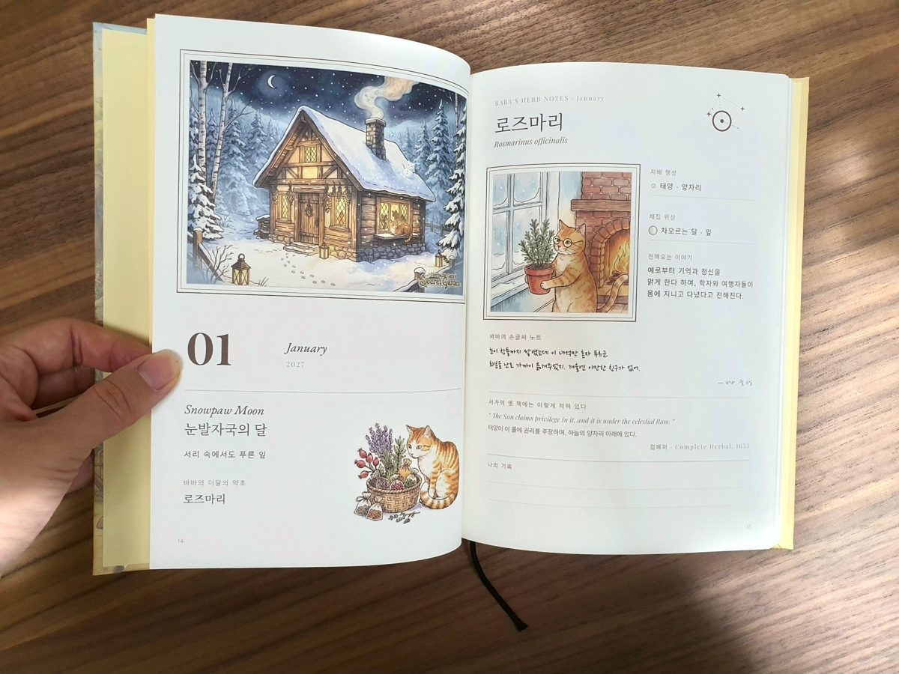
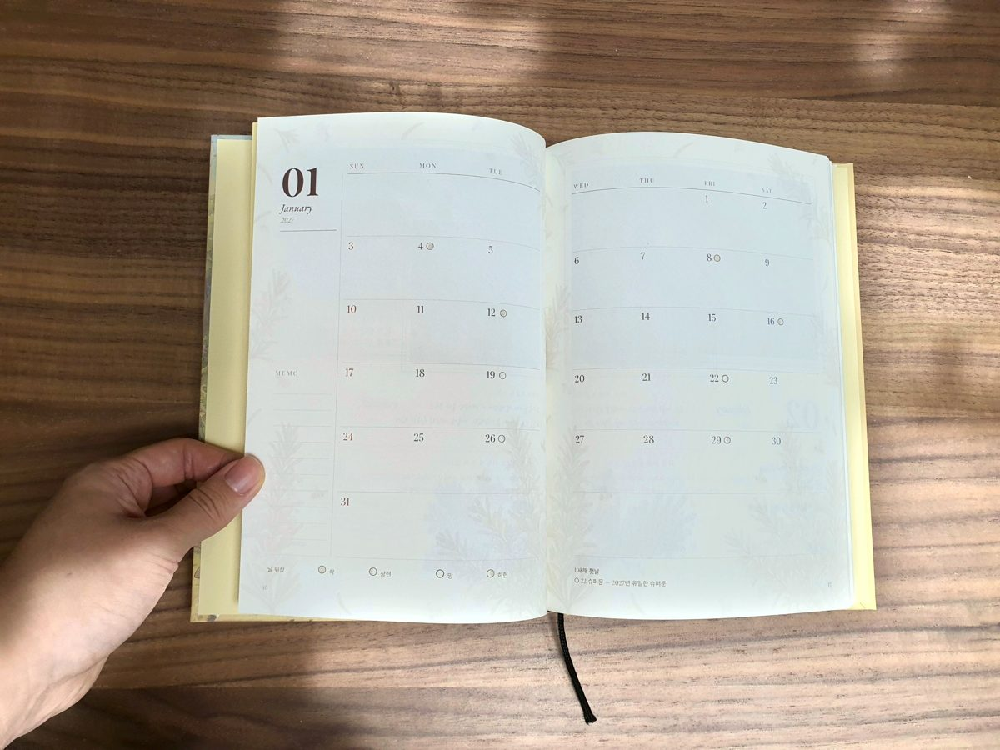
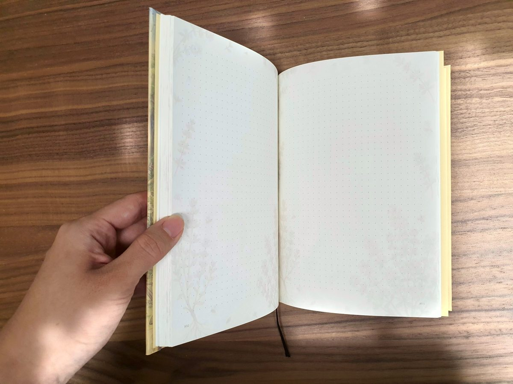
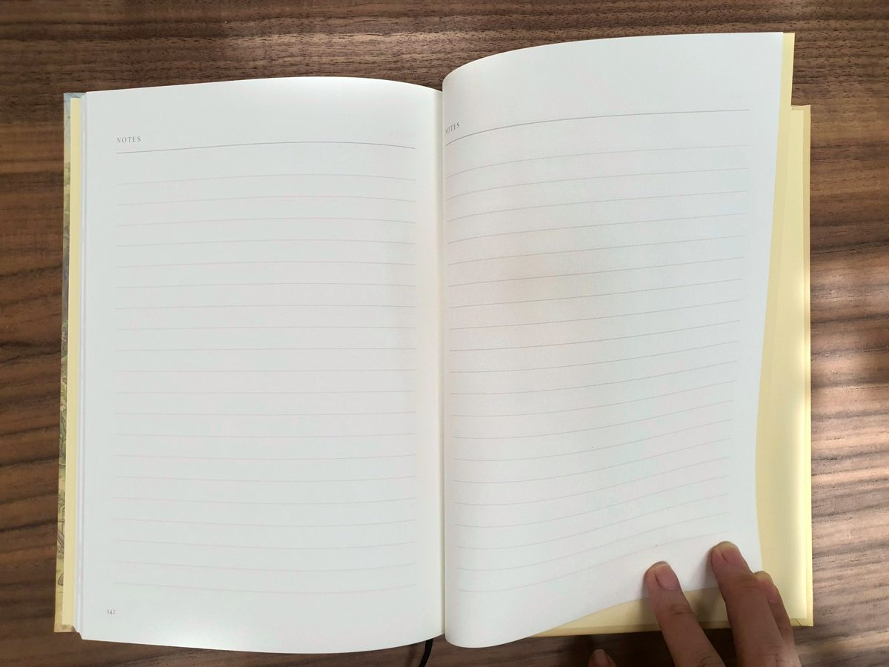
내지는 미색 종이라 조명에 따라 색이 조금 다르게 보일 수 있어요.
Contents
페이지 구성
총 148쪽
- 여는 페이지p.1 – 13
- 속표지 · 목차 · 이 책의 주인 · 사용법 · 바바 일러스트 · 한눈에 보는 2027 · 2028 · 한 해의 일정(연간 계획표) · 올해의 정원
- 열두 달p.14 – 61 · 달마다 4쪽
- 월 표지(그달의 정원 일러스트, 달 이름, 이달의 약초) · 바바의 약초 노트(학명, 지배 행성, 채집 위상, 손글씨 기록, '나의 기록' 칸) · 펼침면 먼슬리(달 위상, 공휴일, 메모 칸)
- 노트와 부록p.62 – 148
- 도트 노트 72쪽 · 자유 노트 13쪽 · 정원 지도 · 콜로폰
Details
제품 정보
- 제품명
- 별의 약초도감 다이어리 2027 · Star Herbarium Diary
- 사이즈
- A5 (148×210mm)
- 제본
- 하드커버(양장) · 무광코팅 · 가름끈
- 페이지
- 148쪽 · 2027년 날짜형
- 내지
- 미색 모조지 100g · 전면 컬러 인쇄
- 만든 곳
- 에델카타리아
- 판매
- 스마트스토어 · 텐바이텐 판매 중 · 텀블벅 『비밀정원』 펀딩에서는 다이어리 세트(재인쇄 한정판 28권)로 함께 받으실 수 있어요